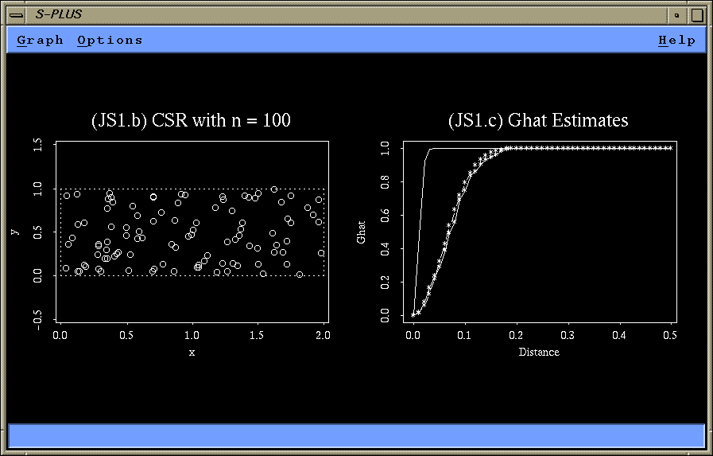
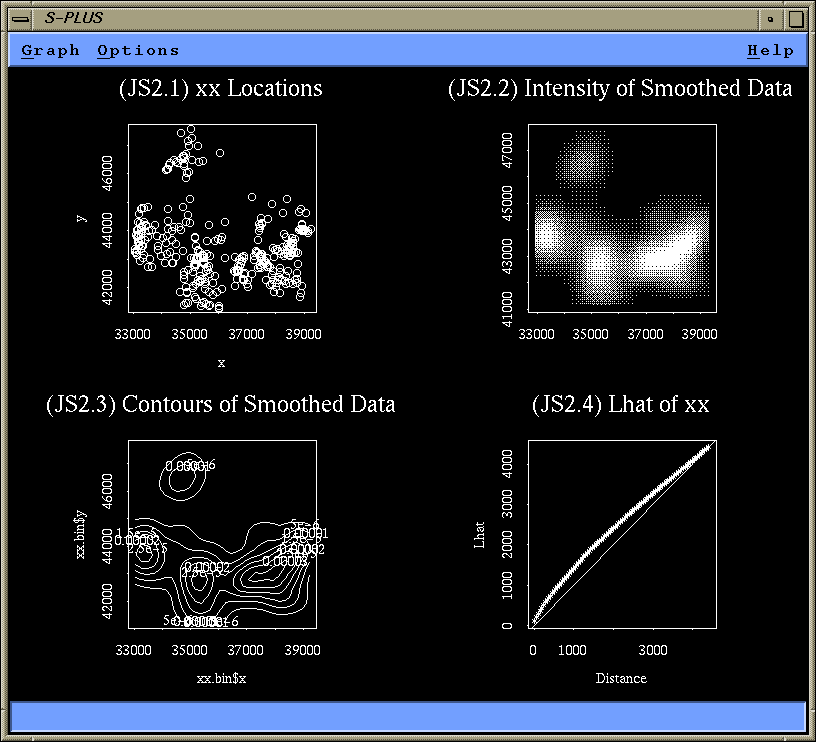
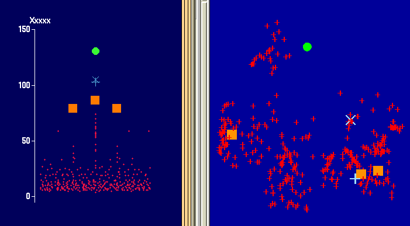
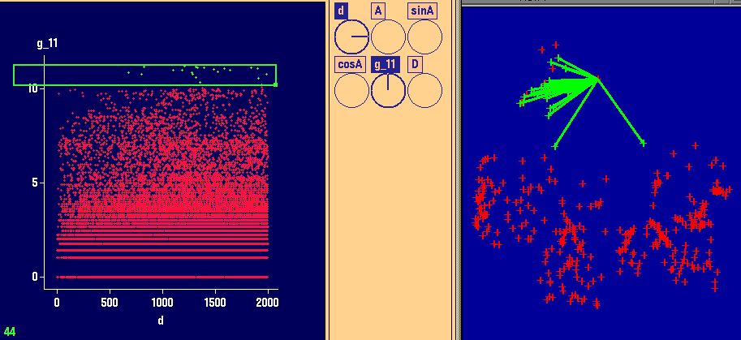
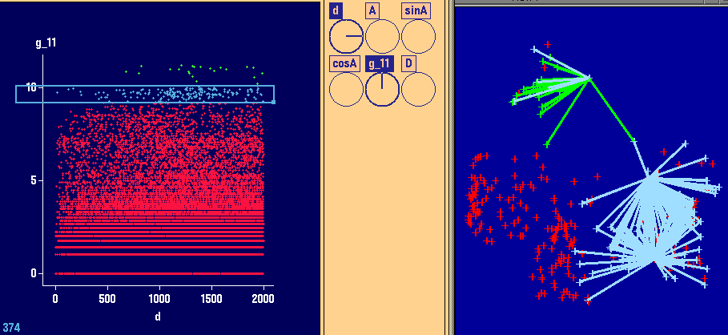
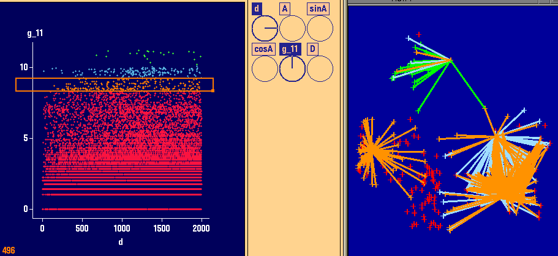
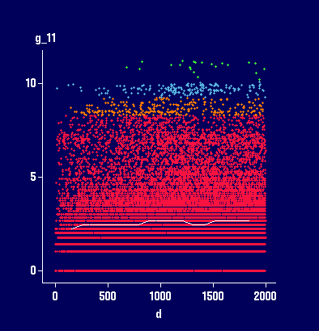
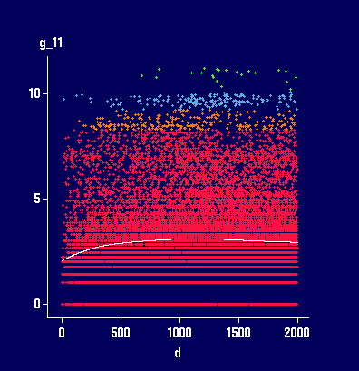
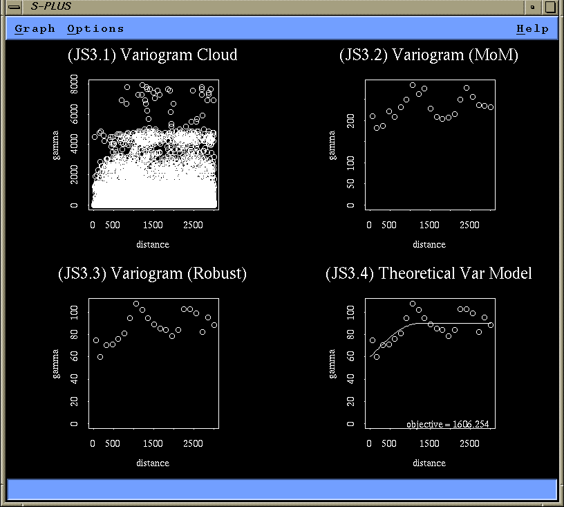
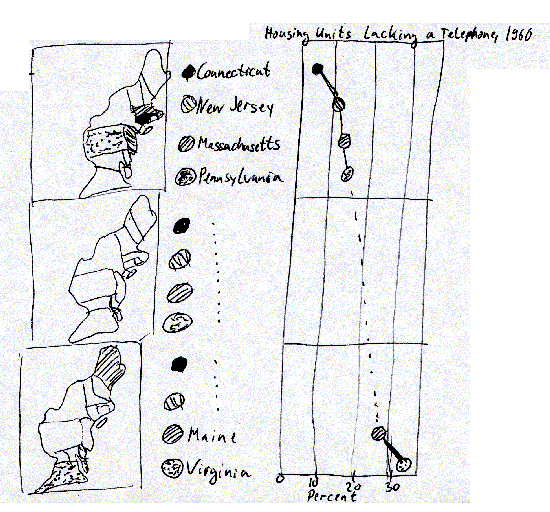

1)
# Part (a)
Ghatedge _ function (spp, steps, xmin, xmax, ymin, ymax)
{
# initialize the vectors
#
w _ seq (0, 0.5, length = steps)
Ghatcor _ rep (0, steps)
n _ nrow (spp)
bi _ rep (0, n)
# for each spatial location, determine it's distance
# from the nearest border
#
for (i in 1:n)
bi[i] _ min (spp[i, 1] - xmin, xmax - spp[i, 1],
spp[i, 2] - ymin, ymax - spp[i, 2])
# for each spatial location, find the 2 nearest neighbors
# (one of these will be the spatial location itself)
#
spp.neighbors _ find.neighbor (as.matrix(spp), k = 2)
# only keep the nearest neighbor that has a different location --
# recall from the "Introduction to S+SpatialStats" that this
# only works if spatial locations are unique; however, for
# a CSR process, we can assume that this is the case;
# for a general solution, some extra steps are needed
#
wi _ spp.neighbors[spp.neighbors[,1] != spp.neighbors[,2], ]
# for each distance w (accessed via w[j]), calculate
# #(bi > w >= wi) / #(bi > w)
#
for (j in 1:steps)
Ghatcor[j] _ sum ((bi > w[j]) & (w[j] >= wi)) /
sum (bi > w[j])
return (Ghatcor)
}
# Part (b)
xmin _ 0
xmax _ 2
ymin _ 0
ymax _ 1
par (mfrow = c(1, 2))
par (pty = "s")
csr100 _ make.pattern (n = 100, boundary =
bbox(x = c(xmin, xmax), y = c(ymin, ymax)))
plot (csr100, boundary = T, main = "(JS1.b) CSR with n = 100")
# Part (c)
steps _ 51
Ghatcor _ Ghatedge (csr100, steps, xmin, xmax, ymin, ymax)
Ghatorig _ Ghat (csr, dist.ghat = seq (0, 0.5, length = steps), plot.it = F)
# since n = 100 in an areas of size 2, we have to use lambda = 50
Gtheo _ 1 - exp(- pi * 50 * seq (0, 0.5, length = steps)^2)
plot (seq (0, 0.5, length = steps), Ghatcor,
xlab = "Distance", ylab = "Ghat", type = "o")
lines (Ghatorig)
lines (seq (0, 0.5, length = steps), Gtheo, type = "b")
title ("(JS1.c) Ghat Estimates")

# Part (d) The solid line in figure (JS1.c) shows the original Ghat. The smooth line consisting of line segments and symbols represents the theoretical distribution function G(w) and the slightly rugged line with overlaid symbols represents Ghat(w) with edge correction. Obviously, the original Ghat is far off the theoretical distribution function G(w). Ghat(w) with edge correction comes very close to the theoretical distribution function G(w).
=============================================================================
2) Read the given spatial point pattern in:
xx.raw _ matrix( scan ("/home/symanzik/splus/final/final.splus"),
344, 4, byrow = T)
# Part (a)
xx.spp _ spp (cbind(xx.raw[,2], xx.raw[,3]))
par (mfrow = c(2, 2), pty = "s")
plot (xx.spp, main = "(JS2.1) xx Locations")
xx.bin _ intensity (xx.spp, method = "kernel",
nx = 30, ny = 30, bw = 1000)
image (xx.bin, main = "(JS2.2) Intensity of Smoothed Data")
contour (xx.bin, main = "(JS2.3) Contours of Smoothed Data")
xx.lhat _ Lhat (xx.spp)
title (main = "(JS2.4) Lhat of xx")
abline (0, 1)
xx.env _ Lenv (xx.spp, nsims = 40, process = "binomial")

# Part (b) Plot 2.1 indicates that there are regions with no points at all and regions with a high density of points. This is confirmed by plot 2.2 (intensity plot) and plot 2.3 (contour plot). Finally, plot 2.4 (Lhat and simulation envelopes) clearly shows that Lhat for the observed data falls far above the upper bound of the simulation envelopes (based on CSR). This data certainly does not represent a CSR process. A reasonable alternative is a clustering process.
============================================================================= 3) # Part (a)

Left plot (Dotplot in XGobi): This plot indicates that there are some high values. However, they are not very far away from the main point cloud. Perhaps, one would not even consider them as global outliers. Right plot (ArcView): This plot indicates the spatial locations of the largest values. They are scattered over the entire region of interest.



3 left plots (Variogram cloud plots in XGobi): In these plots, the highest values of the variogram cloud plot have been brushed. 3 right plots (ArcView): These plots indicate the spatial locations of the points brushed in XGobi. Certainly, there are no spatial outliers. Spatial outliers are different from all NEARBY observations. Here, there is absolute randomness whether one of the highest values (as identified in Part (a)) is higher than a nearby neighboring value. These plots are an indicator that there is some high variation in the data.


Plots with 2 different smoothers in XGobi, added to
the Variogram cloud plot in XGobi:
Based on the type of the smoother (as a very rough
estimate for the variogram) we might conclude that
there is no spatial dependence at all (left plot)
or only very little spatial dependence with a
large nugget effect (right plot) and a range of
about 500.
# Part (b)
xx.res _ xx.raw[,4]
xx.Long _ xx.raw[,2]
xx.Lat _ xx.raw[,3]
par (mfrow = c(2, 2))
xx.vcloud _ variogram.cloud (xx.res ~ loc (xx.Long, xx.Lat),
maxdist = 3000)
xx.varmom _ variogram (xx.res ~ loc (xx.Long, xx.Lat),
maxdist = 3000)
xx.varrob _ variogram (xx.res ~ loc (xx.Long, xx.Lat),
maxdist = 3000, method = "robust")
plot(xx.vcloud, main = "(JS3.1) Variogram Cloud")
plot(xx.varmom, main = "(JS3.2) Variogram (MoM)")
plot(xx.varrob, main = "(JS3.3) Variogram (Robust)")
# Finally try to fit a spherical theoretical variogram model
model.variogram (xx.varrob, fun = spher.vgram,
range = 1200, sill = 30, nugget = 60)
## For these parameters, we get:
#
# Select a number to change a parameter (or 0 to exit):
# Current objective = 1606.254
# 1: range - current value: 1200
# 2: sill - current value: 30
# 3: nugget - current value: 60
# Selection: 0
#
title("(JS3.4) Theoretical Var Model")

The variogram cloud plot (JS3.1) shows the effect of the large values on the variogram cloud. Even at small distances, there is already a very large variation, suggesting a large nugget effect. The range seems to be somewhere between 500 and 1500. These large values have a considerable effect on the method of moment variogram. While the shape of the mom variogram (JS3.2) is about the same as the shape of the robust variogram (JS3.3), the sill of the robust variogram is about 90 while it is about 200 in the mom variogram. Clearly, we should use the robust variogram for modeling. Eventually, a sperical variogram with range 1200, sill 30, and nugget 60, is a reasonable description, suggesting some spatial dependence. However, the decline in the variogram in the interval from 1000 to 2000 looks really suspicious. Actually, the data used for question 2 and 3 are the radon measurements in Lancashire from Bailey/Gatrell (pages 148-149, 166). They claim that there is no spatial dependence at all in this data set (other than perhaps a small global trend as claimed by Bailey/Gatrell but not clearly visible in XGobi). So a variogram model with a plain nugget effect of about 90 would be a feasible answer.
============================================================================= 4) # Part (a) i. New York is one of the top 8 states in the lower right map. In all other maps, New York falls into category 2 (or even 3). The governor probably would select map D. ii. Connecticut is the state that lacks least telephones. In both right maps, there seem to be states that are as good as Connecticut. In both left maps, Connecticut is the top state. The governor might select map C (or A, depending on what else he might want to express). iii. In both left maps, New Jersey is in category 2. In the lower right map. New Jersey is only one out of eight good states. However, in map B, New Jersey is one of the top 4 states. The governor therefore might select map B. iv. Viriginia clearly is the state that lacks most telephones. However, in the upper right and lower left map, there are other states that appear as bad as Virginia. So why spending much money on Virginia? But Virignina looks most pitiful in map D. There are 8 states that are far ahead, and only 3 states closer to Virginia, bot no state as bad as Virginia. Clearly, based on map D, Virginia - and only Virginia, deserves all the federal funding. v. A map with many missing telephones would be best for this historician - so he would select map C for his needs. There are 8 states where more than 15% of houses lack a phone - really primitive times (and very dark colors ;-) # Part (b) State | A | B | C | D || True ----------------------------------------------------- Maine | 10-30 | >25 | >15 | 20-30 || 25-30 New York | 10-30 | 15-25 | >15 | <20 || 15-20 Connecticut | <10 | <15 | <10 | <20 || <10 New Jersey | 10-30 | <15 | 10-15 | <20 || 10-15 Virginia | >30 | >25 | >15 | >30 || >30 # Part (c) In a micromap plot of 12 states, we would most likely use 3 small maps to highlight 4 states in each map (possible alternatives are 2 maps with 6 states or 4 maps with 3 states). An accompanying statistical plot (e.g., a dotplot) would display the percentage of housing units lacking a telephone in 1960.

# Part (d) Cheating would not be as easy using as micromap plot (given that the correct numbers are displayed). The true ranks of the states will be visible in a micromap plot and the distance between states (how much better is Connecticut compared to the second best state) and exact values for each state will be displayed (which allows to answer whether in Virginia about 50% of houses lack a telephone or only 31%).
=============================================================================